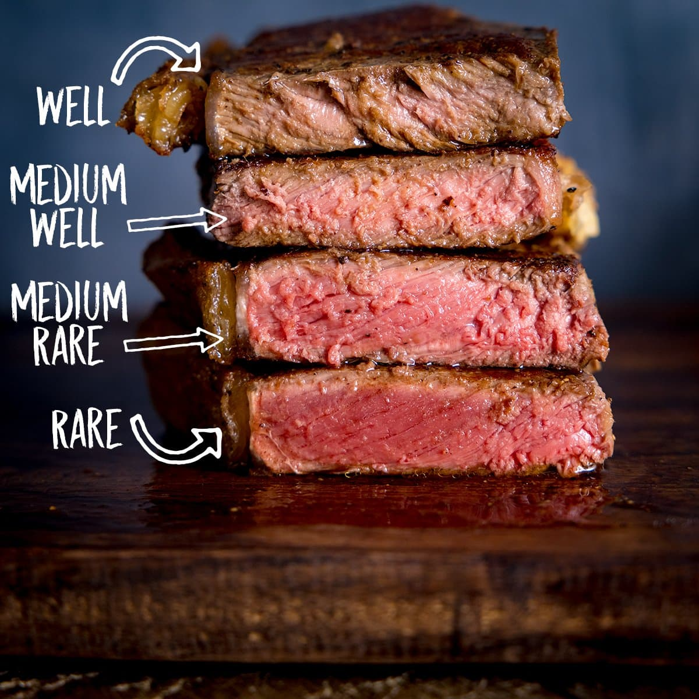
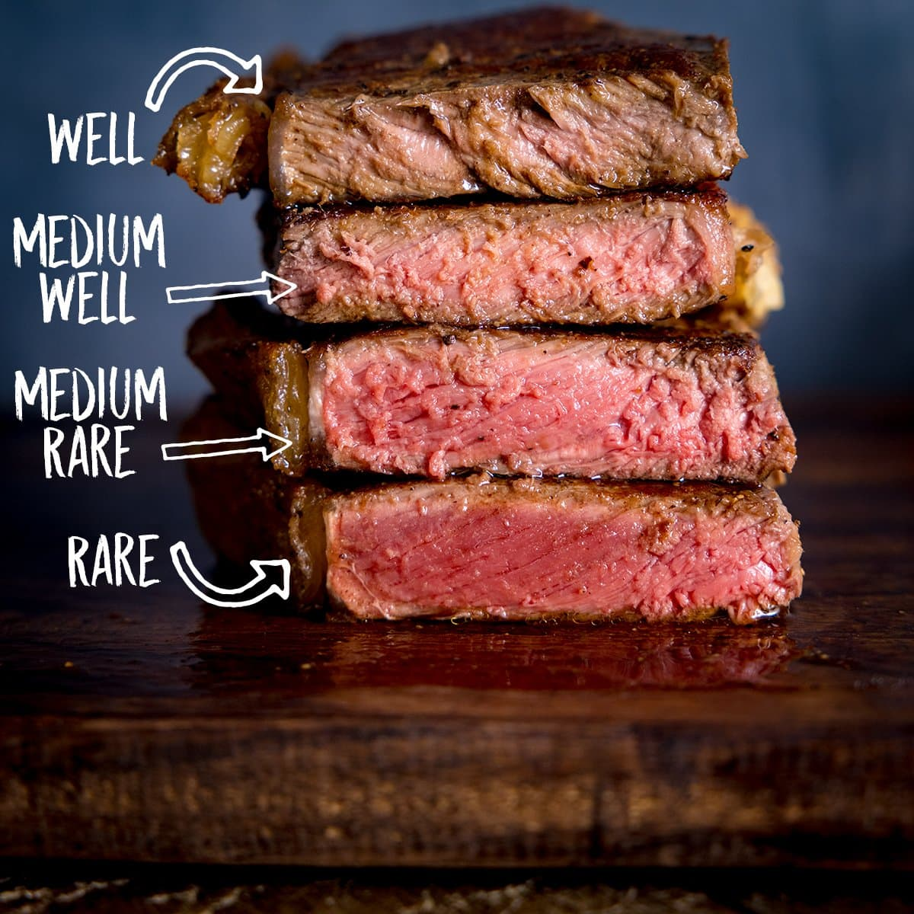

World's Best steak
how  to cook a steak 
to cook a steak 
just a stake
Servings: 2 to 4
Prep Time: 4 Minutes
Cook Time: 6 Minutes
Total Time: 10 Minutes
ingredient:
-
2 (12-oz) New York strip or ribeye steaks or 4 (6-oz)
-
(6-oz) filet mignons, about 1½ inches thick
-
1 heaping teaspoon kosher salt
-
½ teaspoon freshly ground black pepper
-
2 tablespoons vegetable oil
-
1 tablespoon unsalted butter
-
A few sprigs fresh thyme leaves
PAN STAKE
istructions
-
To begin, pat the steaks dry with paper towels.
-
Season the steaks all over with the salt and pepper.
-
Turn on your exhaust fan and heat a heavy pan (preferably cast iron or stainless steel) over medium-high heat until it's VERY hot.
-
Add the oil to the pan and heat until it begins to shimmer and move fluidly around the pan.
-
Carefully set the steaks in the pan, releasing them away from you so the oil doesn’t splatter in your direction. The oil should sizzle.
-
Leave the steaks alone! Avoid the temptation to peek or fiddle or flip repeatedly; the steaks need a few minutes undisturbed to develop a golden crust. Flip the steaks when they release easily and the bottom is a deep-brown color, about 3 minutes. Continue to cook the steaks for another 3 to 4 minutes on the second side for rare to medium-rare. (For medium, cook 4 to 5 minutes on second side; for well-done, cook 5 to 6 minutes on second side).
-
During the last minute of cooking, add the butter and thyme sprigs to the pan with the steaks.
-
If you are serving the steaks unsliced, transfer them to plates and serve hot. If you plan to slice the steaks, transfer them to a cutting board and let rest, covered with aluminum foil, for 5 to 10 minutes; then slice thinly against the grain.
here for more recipes:
footer
ref erence